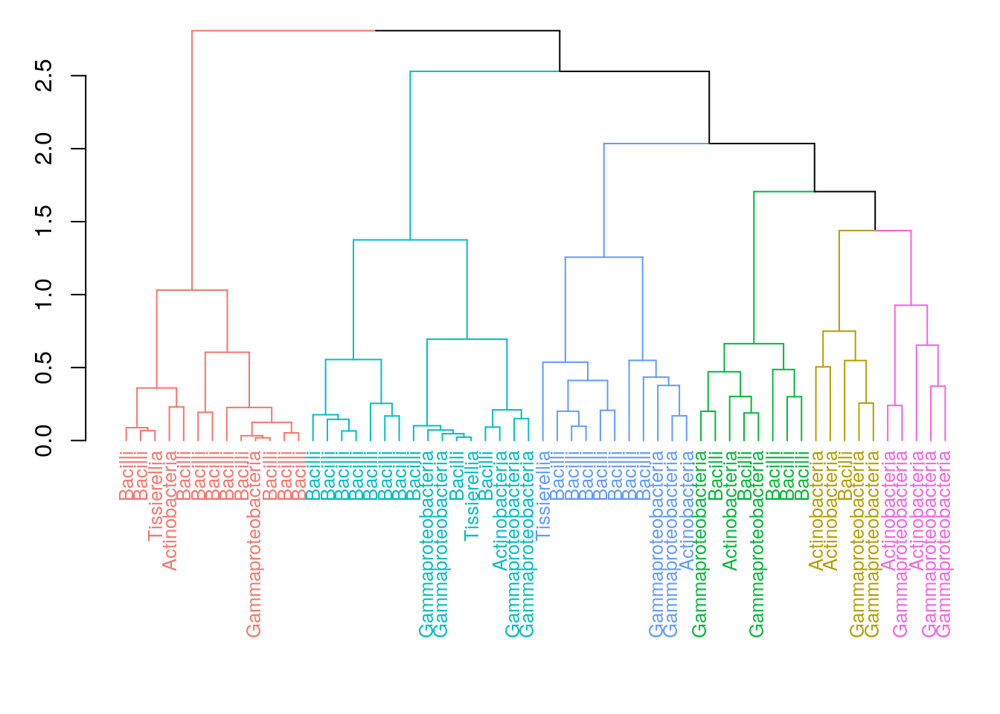
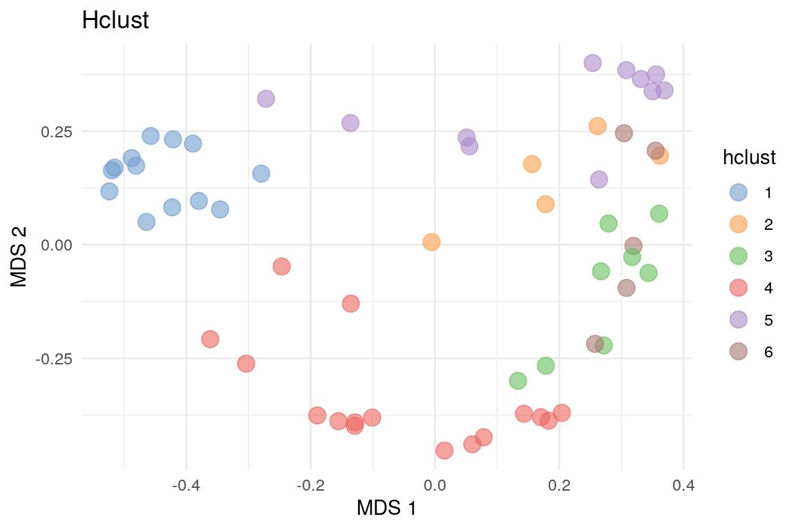
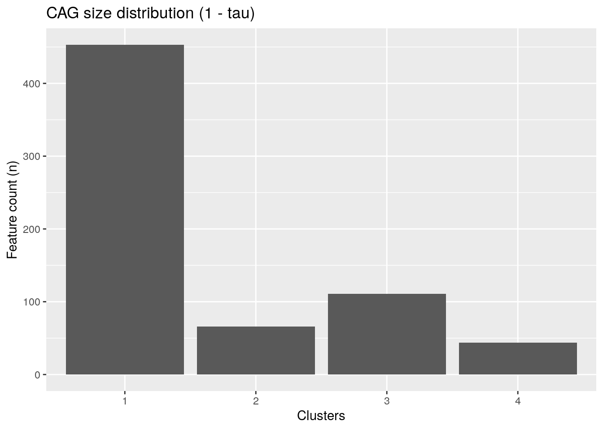
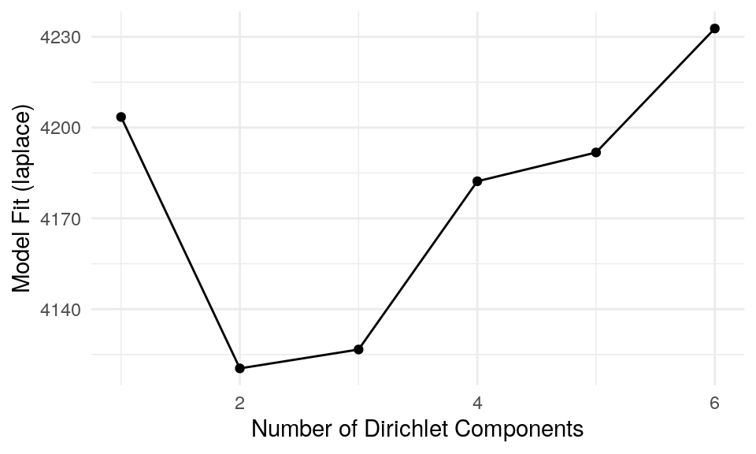
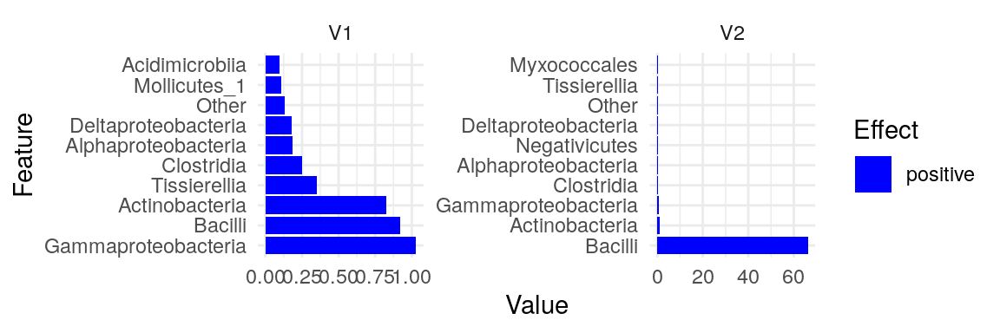
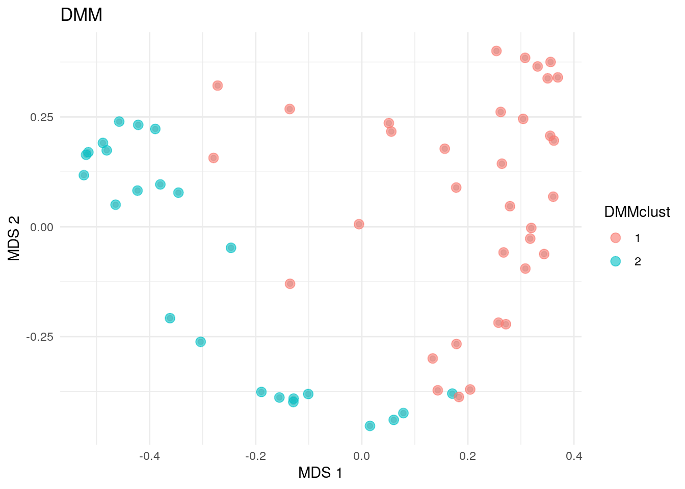
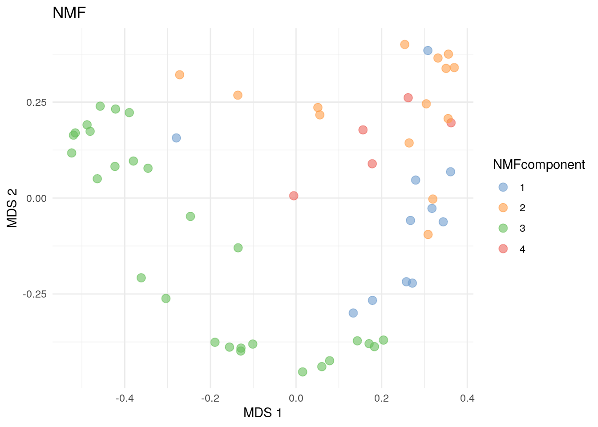
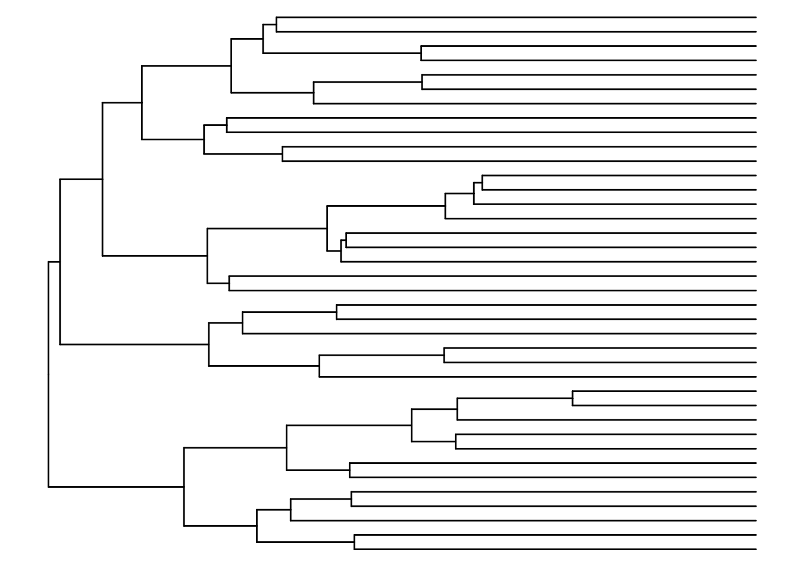
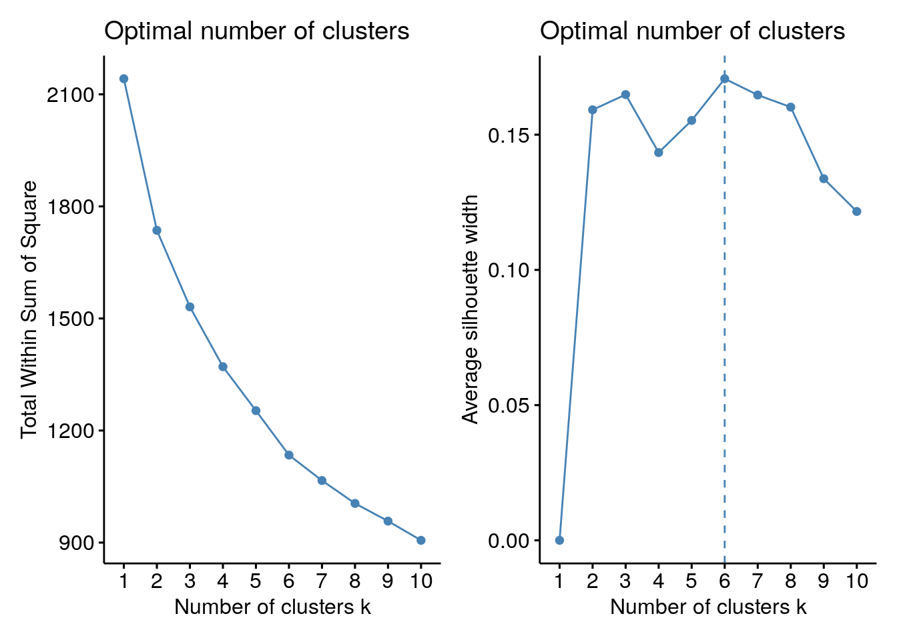
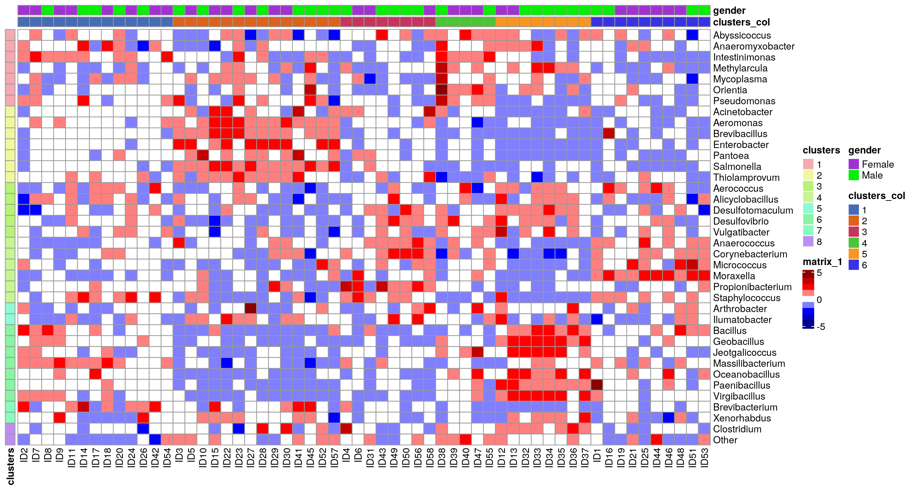

15 Community typing
Community typing in microbial ecology involves identifying distinct microbial communities by recognizing patterns in the data. The community types are described based on taxa characteristics, representing each community. The samples are described by community type assignments, which are defined by the ecosystem features in the sample. Community typing techniques can typically be divided into unsupervised clustering and dimensionality reduction techniques, where clustering is more commonly in use.
In this chapter, we first walk you through some common clustering schemes in use for microbial community ecology, and then focus in more detailed community typing techniques based on data dimensionality reduction.
15.1 Clustering
Clustering techniques aim to find groups, called clusters, that share a pattern in the data. In the microbiome context, clustering techniques are included in microbiome community typing methods. For example, clustering allow samples to be distinguished from each other based on their microbiome community composition. Clustering scheme consists of two steps, the first is to compute the sample dissimilarities with a given distance metrics, and the second is to form the clusters based on the dissimilarity matrix. The data can be clustered either based on features or samples. The examples below are focused on sample clustering.
There are multiple clustering algorithms available. bluster is a Bioconductor package providing tools for clustering data in the SummarizedExperiment container. It offers multiple algorithms such as hierarchical clustering, DBSCAN, and K-means.
# Load dependencies
library(bluster)In the examples of this chapter we use peerj13075 data for microbiota community typing. This chapter illustrates how different results can be obtained depending on the choice of the algorithm. To reduce calculation time we decided to agglomerate taxa onto ‘Class’ level and filter out the least prevalent taxa as well as less commonly detected within a sample resulting in 25 features in the data.
library(mia)
data("peerj13075", package = "mia")
tse <- peerj13075
# Filter out most taxa to ease the calculation
altExp(tse, "prevalent") <- agglomerateByPrevalence(
tse, rank = "class", prevalence = 20/100, detection = 1/100)15.1.1 Hierarchical clustering
The hierarchical clustering aims to find hierarchy between samples/features. There are two approaches: agglomerative (“bottom-up”) and divisive (“top-down”). In agglomerative approach, each observation is first in a unique cluster, after which the algorithm continues to agglomerate similar data points into clusters. The divisive approach, instead, starts with one cluster that contains all observations. Clusters are split recursively into clusters that differ the most. The clustering can be continued until each cluster contains only one observation.
In this example we use addCluster() function from mia to cluster the data. addCluster() function allows to choose a clustering algorithm and offers multiple parameters to shape the result. HclustParam() parameter is chosen for hierarchical clustering. HclustParam() parameter itself has parameters on its own HclustParam documentation. A parameter, by defines whether to cluster features or samples. Here we cluster counts data, for which we compute the dissimilarities with the Bray-Curtis distance. Here, again, we use ward.d2 method. Returning statistical information can be chosen by using full parameter. Finally, the clust.col parameter allows us to choose the name of the column in the colData (default name is clusters).
library(vegan)
set.seed(174923)
altExp(tse, "prevalent") <- addCluster(
altExp(tse, "prevalent"),
assay.type = "counts",
by = "cols",
HclustParam(method = "ward.D2", dist.fun = getDissimilarity, metric = "bray"),
full = TRUE,
clust.col = "hclust")
table(altExp(tse, "prevalent")$hclust)
##
## 1 2 3 4 5 6
## 13 5 8 16 11 5Hierarchical clustering suggests six clusters to describe the data.
Now, we visualize the hierarchical structure of the clusters with a dendrogram tree. In dendrograms, the tree is split where the branch length is the largest. In each splitting point, the tree is divided into two clusters leading to the hierarchy. In this example, each sample is labelled by their dominant taxon to visualize ecological differences between the clusters.
library(dendextend)
# Get hclust data from metadata
hclust_data <- metadata(altExp(tse, "prevalent"))$clusters$hclust
# Get the dendrogram object
dendro <- as.dendrogram(hclust_data)
k <- length(unique(altExp(tse, "prevalent")$hclust))
# Color the branches by clusters
cols <- scales::hue_pal()(k)
# Order the colors to be equivalent to the factor levels
cols <- cols[c(1,4,5,3,2,6)]
dend <- color_branches(dendro, k = k, col = unlist(cols))
# Label the samples by their dominant taxon
altExp(tse, "prevalent") <- addDominant(altExp(tse, "prevalent"))
labels(dend) <- altExp(tse, "prevalent")$dominant_taxa
dend <- color_labels(dend, k = k, col = unlist(cols))
# Adjust frame for the figure
par(mar=c(9, 3, 0.5, 0.5))
# Plot dendrogram
dend |> set("labels_cex", 0.8) |> plot()
We can also visualize the clusters by projecting the data onto two-dimensional surface that captures the most variability in the data. In this example, we use multi-dimensional scaling (MDS) (see Section 14.2).
plotReducedDim(
altExp(tse, "prevalent"), "MDS", colour_by = "hclust",
theme_size = 13, point_size = 4) +
labs(color = "HClust", title = "Hclust") + theme_minimal()
15.1.2 Agglomeration based on clusters
Another way to agglomerate the data is to cluster the taxa. To do so, we usually start by doing a compositionality aware transformation such as CLR, followed by the application of a standard clustering method.
Here is an example that does a CLR transformation followed by the hierarchical clustering algorithm. We will use the kendall dissimilarity.
# The result of the CLR transform is stored in the assay clr
tse <- transformAssay(tse, method = "clr", pseudocount = 1)
tse <- transformAssay(
tse, assay.type = "clr", method = "standardize", MARGIN = "rows")
# Declare the Kendall dissimilarity computation function
kendall_dissimilarity <- function(x) {
as.dist(1 - cor(t(x), method = "kendall"))
}
# Cluster (with Kendall dissimilarity) on the features of the `standardize`
# assay
tse <- addCluster(
tse,
assay.type = "standardize",
clust.col = "hclustKendall",
MARGIN = "rows",
HclustParam(dist.fun = kendall_dissimilarity, method = "ward.D2"))Results are stored in the rowData column specified with the clust.col parameter.
To better visualize the results and the distribution of the clusters, we can plot the histogram of the clusters.
library(ggplot2)
p <- ggplot(rowData(tse), aes(x = hclustKendall)) +
geom_bar() +
labs(title = "CAG size distribution (1 - tau)",
x = "Clusters", y = "Feature count (n)")
p
Then we can merge data to clusters.
# Aggregate clusters as a sum of each cluster values
tse_merged <- agglomerateByVariable(tse, by = "rows", f = "hclustKendall")
tse_merged
## class: TreeSummarizedExperiment
## dim: 4 58
## metadata(0):
## assays(3): counts clr standardize
## rownames(4): 1 2 3 4
## rowData names(7): kingdom phylum ... genus hclustKendall
## colnames(58): ID1 ID2 ... ID57 ID58
## colData names(5): Sample Geographical_location Gender Age Diet
## reducedDimNames(0):
## mainExpName: NULL
## altExpNames(1): prevalent
## rowLinks: NULL
## rowTree: NULL
## colLinks: NULL
## colTree: NULLWe can note that it worked as planned since there are now as many rows as there were clusters.
You can find more information on agglomeration from Chapter 9.
15.1.3 Dirichlet Multinomial Mixtures (DMM)
This section focuses on Dirichlet-Multinomial MixturenModel analysis. It is a Bayesian clustering technique that allows to search for sample patterns that reflect sample similarity in the data using both prior information and the data.
In this example, we cluster the data with DMM clustering. In the example below, we calculate model fit using Laplace approximation ro reduce the calculation time. The cluster information is added in the metadata with an optional name. In this example, we use a prior assumption that the optimal number of clusters to describe the data would be in the range from 1 to 6.
# Run the model and calculates the most likely number of clusters from 1 to 6
set.seed(1495723)
altExp(tse, "prevalent") <- addCluster(
altExp(tse, "prevalent"),
assay.type = "counts",
name = "DMM",
DmmParam(k = 1:6, type = "laplace"),
MARGIN = "samples",
full = TRUE,
clust.col = "dmmclust")The plot below represents the Laplace approximation to the model evidence for each of the six models. We can see that the best number of clusters is two, as the minimum value of Laplace approximation to the negative log model evidence for DMM models as a function of k, determines the optimal k. The optimal k suggests to fit a model with k mixtures of Dirichlet distributions as a prior.
library(miaViz)
p <- plotDMNFit(altExp(tse, "prevalent"), type = "laplace", name = "DMM")
p + theme_minimal(base_size = 11)
The plot above suggests that two clusters describe the data the best. Now we can plot which taxa define the key cluster features.
# Get the estimates on how much each phyla contributes on each cluster
best_model <- metadata(altExp(tse, "prevalent"))$DMM$dmm[2]
drivers <- as.data.frame(best_model[[1]]@fit$Estimate)
# Plot by utilizng miaViz::plotLoadings
plotLoadings(as.matrix(drivers), ncomponents = 2)
As well as in hierarchical clustering, we can also visualize the clusters by projecting the data onto two-dimensional surface calculated using MDS. The plot rather clearly demonstrates the cluster division.
# DMM clusters
plotReducedDim(altExp(tse, "prevalent"), "MDS", theme_size = 13) +
geom_point(size = 3, alpha = 0.6,
aes(color = altExp(tse, "prevalent")$dmmclust)) +
labs(color = "DMMclust", title = "DMM") + theme_minimal()
15.2 Dimensionality reduction
Dimensionality reduction can be considered as a part of community typing, where the aim is to find underlying structure in the data. Dimensionality reduction relies in the idea that the data can be describe in a lower rank representation, where latent features with different loads of the observed ones describe the sample set. This representation stores the information about sample dissimilarity with significantly reduced amount of data dimensions. Unlike clustering, where each sample is assigned into one cluster, dimensionality reduction allows continuous memberships for all samples into all community types. Dimensionality reduction techniques are explained in chapter Chapter 14 in more detail.
15.2.1 Non-negative matrix factorization
In this section, we will particularly focus on Non-negative Matrix Factorization (NMF). NMF decomposes the original data X into two lower rank matrices: H representing key taxa characteristics of each community type and W representing continuous sample memberships across all community types. NMF algorithm calculates the minimum distance between the original data and it’s approximation using Kullback-Leibler divergence.
Here, we use mia wrapper getNMF. To reduce calculation time, we set the number of components k to four instead of optimizing the number of components that describe the original data the best. The matrix returned by getNMF contains the sample scores, while the NMF output and NMF feature loadings are stored in the attributes NMF_output and loadings, respectively.
library(NMF)
# Calculate NMF
set.seed(3221)
res <- getNMF(altExp(tse, "prevalent"), k = 4)
# Obtain the relative abundance of ES in each sample
wrel <- t(apply(res, 1, function (x) {x/sum(x)}))
# Define the community type of a sample with the highest relative abundance
altExp(tse, "prevalent")$NMFcomponent <- as.factor(apply(wrel, 1, which.max))
table(altExp(tse, "prevalent")$NMFcomponent)
##
## 1 2 3 4
## 11 14 28 5Now, we can plot the NMF community types calculated based on maximum membership for each sample onto a two-dimensional surface.
# NMF community types
plotReducedDim(
altExp(tse, "prevalent"), "MDS", colour_by = "NMFcomponent",
point_size = 3, theme_size = 13) +
labs(color = "NMFcomponent", title = "NMF") + theme_minimal()
15.3 Heatmaps with clusters
In Section 12.2, we visualized community composition with heatmaps. We can visualize the data similarly but add addition information on clusters.
library(ComplexHeatmap)
# Agglomerate to Genus level
tse <- agglomerateByPrevalence(tse, rank = "genus")
# Apply clr and scale data
tse <- transformAssay(tse, method = "clr", pseudocount = TRUE)
tse <- transformAssay(
tse, assay.type = "clr", method = "standardize", MARGIN = "rows")
# Gets the assay table
mat <- assay(tse, "standardize")Now we can cluster rows.
library(ape)
library(ggtree)
# Hierarchical clustering
tse <- addCluster(
tse, assay.type = "standardize", HclustParam(method = "complete"),
full = TRUE)
taxa_hclust <- metadata(tse)[["clusters"]][["hclust"]]
# Creates a phylogenetic tree
taxa_tree <- as.phylo(taxa_hclust)
ggtree(taxa_tree)
Based on the phylo tree, we decide to create eight clusters.
# Hierarchical clustering with k = 3
tse <- addCluster(
tse, assay.type = "standardize",
HclustParam(method = "complete", cut.fun = cutree, k = 8))For columns, we can utilize k-means clustering. First we have to specify the number of clusters.
library(factoextra)
library(NbClust)
library(patchwork)
# Elbow method
p1 <- fviz_nbclust(assay(tse, "standardize"), kmeans, method = "wss")
# Silhouette method
p2 <- fviz_nbclust(assay(tse, "standardize"), kmeans, method = "silhouette")
p1 + p2
Based on the results, we split the columns into six clusters.
# Hierarchical clustering with k = 4
tse <- addCluster(
tse, assay.type = "standardize", by = "cols",
KmeansParam(centers = 6))
# Prints samples and their clusters
colData(tse)[["clusters"]]
## ID1 ID2 ID3 ID4 ID5 ID6 ID7 ID8 ID9 ID10 ID11 ID12 ID13 ID14 ID15
## 6 1 2 3 2 3 1 1 1 2 1 5 5 1 2
## ID16 ID17 ID18 ID19 ID20 ID21 ID22 ID23 ID24 ID25 ID26 ID27 ID28 ID29 ID30
## 6 1 1 6 1 6 2 2 1 6 1 2 2 2 2
## ID31 ID32 ID33 ID34 ID35 ID36 ID37 ID38 ID39 ID40 ID41 ID42 ID43 ID44 ID45
## 3 5 5 5 5 5 5 4 4 4 2 1 3 6 2
## ID46 ID47 ID48 ID49 ID50 ID51 ID52 ID53 ID54 ID55 ID56 ID57 ID58
## 6 4 6 3 3 6 2 6 1 4 3 2 3
## Levels: 1 2 3 4 5 6Now we can create a heatmap with additional annotations.
# Order the data based on clusters
tse <- tse[
order(rowData(tse)[["clusters"]]),
order(colData(tse)[["clusters"]])]
# Get data for plotting
mat <- assay(tse, "standardize")
taxa_clusters <- rowData(tse)[, "clusters", drop = FALSE] |>
as.data.frame()
sample_data <- colData(tse)[, c("clusters", "Gender"), drop = FALSE] |>
as.data.frame()
colnames(sample_data) <- c("clusters_col", "gender")
# Determines the scaling of colors
# Scale colors
breaks <- seq(
-ceiling(max(abs(mat))), ceiling(max(abs(mat))),
length.out = ifelse( max(abs(mat))>5, 2*ceiling(max(abs(mat))), 10 ) )
colors <- colorRampPalette(c("darkblue", "blue", "white", "red", "darkred"))(length(breaks)-1)
pheatmap(
mat, annotation_row = taxa_clusters,
annotation_col = sample_data,
cluster_cols = FALSE, cluster_rows = FALSE,
breaks = breaks,
color = colors)
For more community typing techniques applied to the ‘SprockettTHData’ data set, see the attached .Rmd file.
Link: